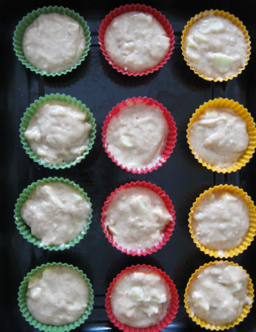

6 tane rendelenmiş elma
1 çay kaşığı tarçın
1 çay bardağı kırılmış ceviz
3 yumurta
1 su bardağı şeker
1 su bardağı süt
Yarım su bardağı sıvı yağ
2 paket vanilya
1 paket kabartma tozu
7-8 yemek kaşığı un

1.Crumble için tereyağ eritilir. Şekerler ve tarçın harmanlanır. Tereyağ eklenip karıştırılır. Un eklenir ve çatalla karıştırılır, çok karıştırmayın un kaybolsun yeter.
2.Muffin için tereyağ ve şeker 2-3 dk çırpılır, yumurta ve yoğurt eklenip 1 dk daha çırpılır. Kuru malzemeler ve süt eklenip spatulayla karıştırılır. Çok cıvık olmayan, yayılmayan bir karışım elde edilir (Cıvıksa un ekleyin)
3.Soyulup küçük küçük doğranmış elmalar ve ceviz eklenip spatulayla karıştırılır (Ben bir de karamelli çikolata parçası ekledim) Muffin kapsülleri kalıba yerleştirilip karışım paylaştırılır.
4.Crumble kısmı muffinlerin üzerine ufalanır, yapışması için hafif bastırılır. 225 derecede 5 dk pişirilip derece 175 e düşürülür 15-16 dk daha pişirilir, kürdan temiz çıkınca çıkarılır.
5.Ilıyınca isterseniz üzerine içine yapabilirsiniz. Pudra şekerine sütü azar azar ekleyip çırpın. Kıvam alınca soğuyan muffinlerin üzerine dökün.
6.Fırında kızarana kadar pişiriyoruz. Afiyet olsun.